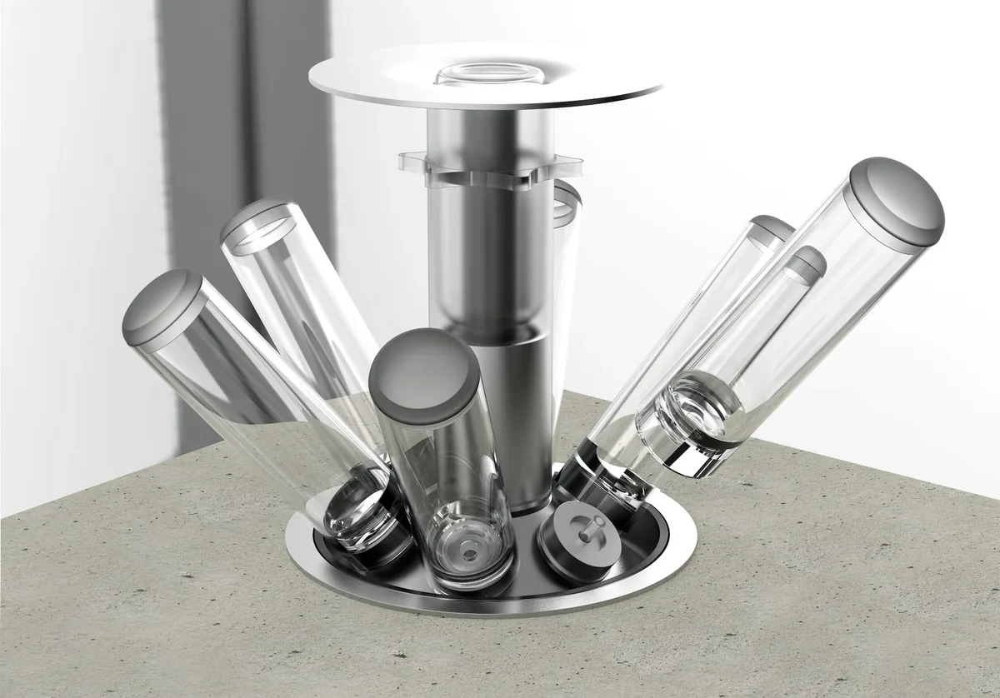
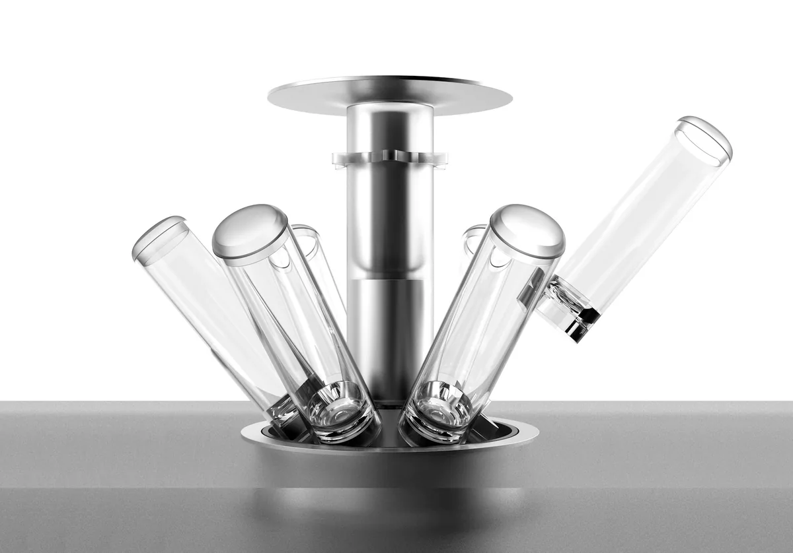
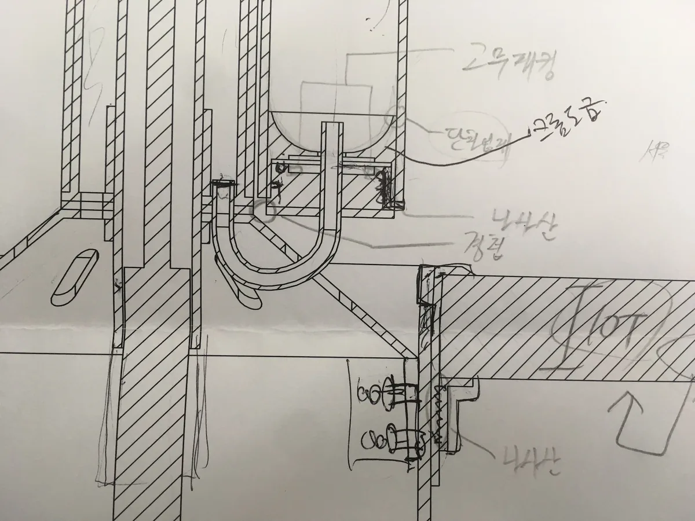
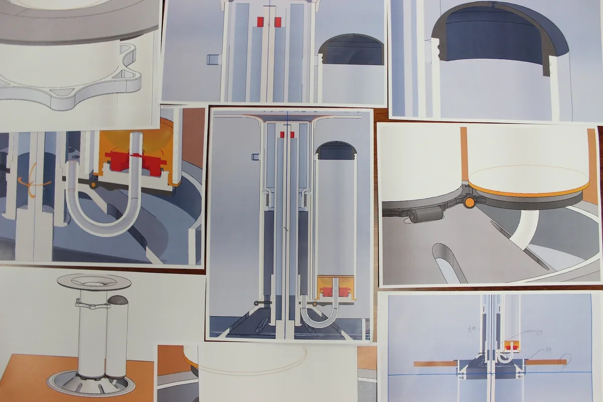
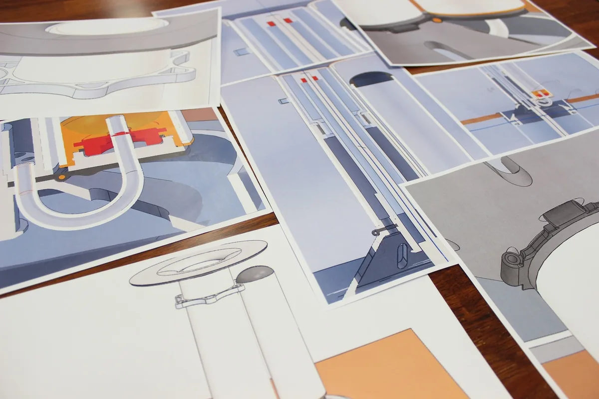
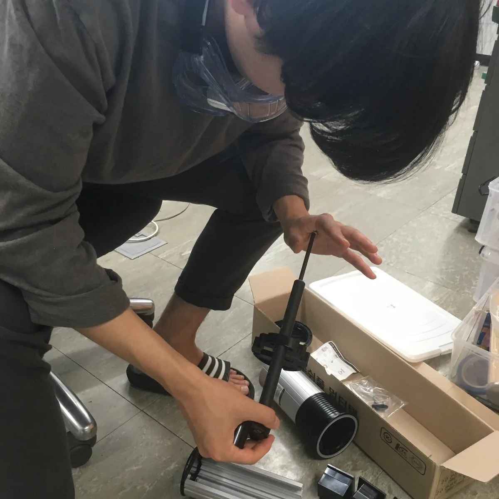
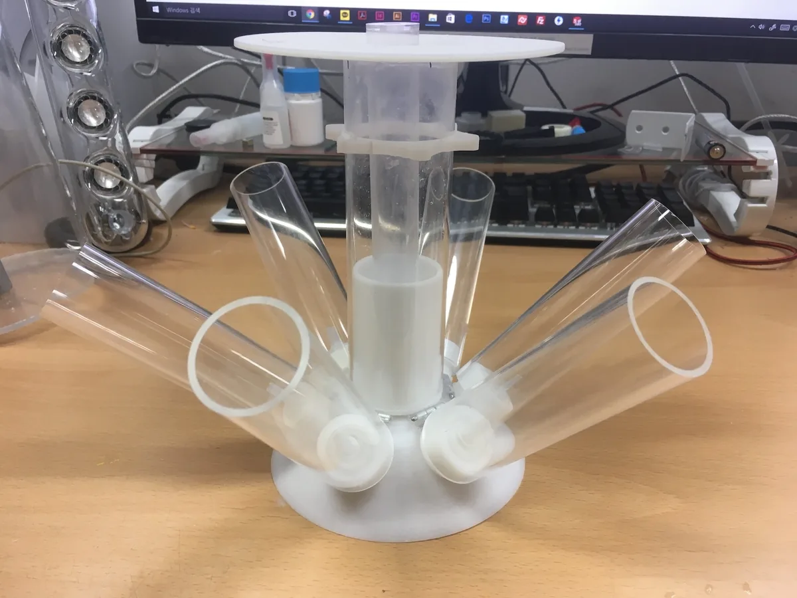
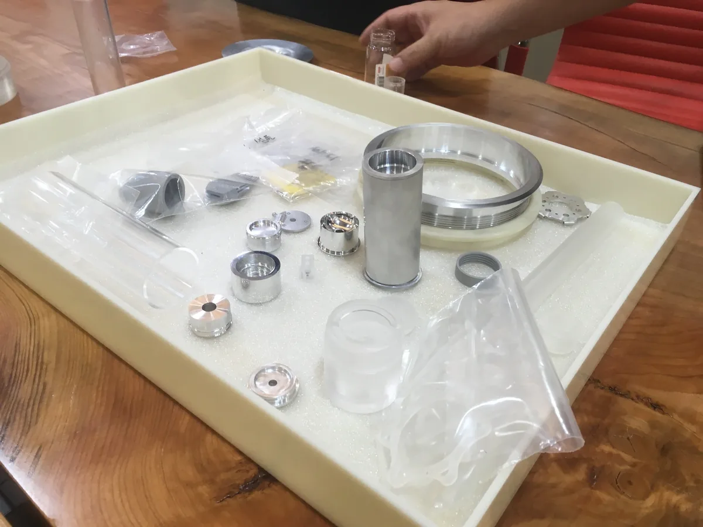
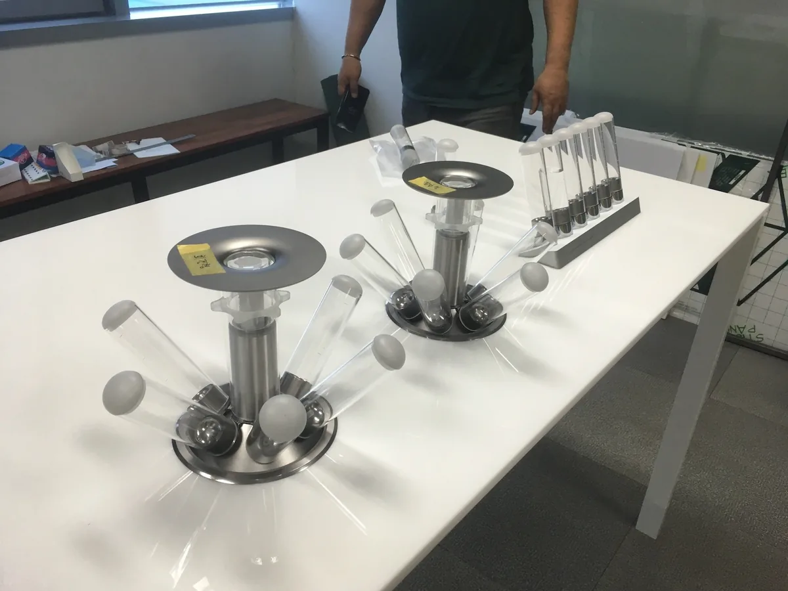

Antibody Incubator
A conceptual home healthcare device that incubates targeted antibodies.
This device collects data from a biometric chip worn by the user and uses it to design a diet tailored to the user’s specific nutritional needs.
Designed for everyday use, it can be mounted under the dining table.
Exhibited at Gwangju Design Biennale 2017, Gwangju, Korea.








